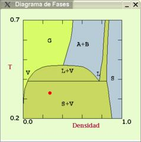

Binary mixtures
EXPERIMENT
2: Liquid-vapor and solid-vapor equilibrium in inmiscible binary mixtures
- Initial Conditions
- Select from the menu Simulation Type the Option Binary mixture
- Select a high temperature (T~1.0) and a density around 0.20
- Activate, if needed, the Option Phase diagram from the
System menu

- Observe the phase diagram:
- This phase diagram corresponds to potential cutoffs
Rc=2.50 for like particles and Rc=1.12 for pairs of particles of
different species
- Grey areas represent conditions of temperature and
density for which an equimolar mixture separates in two
phases with the same density but different composition (demixing)./li>
- Select conditions of density and temperature
corresponding to a demixing zone (labeled as A+B on the
phase diagram).
- Confirm that the A-A cutoff is set to 2.50 and 1.12 for
the A-B interaction using the Option Interactions from the
System menu.
- Simulation
- Start the simulation run using the Option Start from the
Control Popup Menu
- Activate the Option Pair distribution function
(System menu)
- Observe that the fluid remains homogeneous, even if
(see g(r)) each particle tends to be surrounded by particles of the
same type.
- Lower the temperature until entering the liquid-vapor
coexistence zone (L+V), T ~ 0.40
- The system now tends to form three phases: two liquids
-each mostly composed of particles of one type (color)- and a
low density phase (gas) in which the two components coexist.
- One the liquid phases have condensed in a few "drops"
lower the temperature until entering the solid-vapor
zone. Observe the changes in the distribution functions and
the progressive decay in the number of gas particles until the
system reaches equilibrium.
- Ideal mixture
- Reproduce the steps indicated above with the crossed
interaction cutoff set to 2.50 (same as for like interactions).
- Now the demixing does not take place, since it is not
energetically favored. (*)
(*) Note: The phase diagram in this instance would be similar to
that of pure substances
Return to
main page